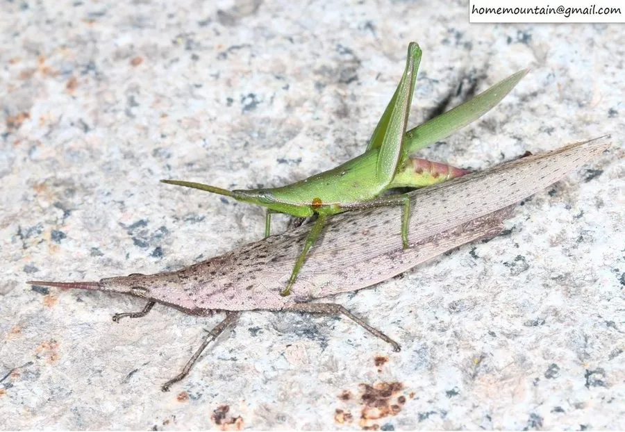

昆虫 · 动物界
短额负蝗 Atractomorpha sinensis

头部尖突、体色碧绿的小型蝗虫，成虫常把身体斜伏在草叶上，啃食蔬菜和豆类叶片，是常见的农业害虫。
- 分类
- 门节肢动物门纲昆虫纲目直翅目科蝗科属负蝗属
- 栖息环境
- 菜地、豆田、棉田和田边草丛
- 地理分布
- 中国大部分地区，以及日本、朝鲜和东南亚
- 保护级别
- 暂无评估
物种志
短额负蝗成虫体长 20–30 mm，雌虫明显大于雄虫。体呈绿色或黄绿色，头部向前突出成锥状，颜面倾斜，触角短而扁；前胸背板有颗粒状突起，前翅狭长，超过腹部末端。
短额负蝗分布于中国大部分地区以及日本、朝鲜和东南亚，是蔬菜、豆类、棉花和烟草等作物上的常见害虫。它一年发生 1–2 代，以卵在土中越冬，翌年 5–6 月孵化。若虫和成虫啃食叶片，造成缺刻和孔洞，严重时只留下叶脉。短额负蝗行动迟缓，常斜伏在草叶或叶片上，受到惊扰才会跳跃或飞走。它的体色随环境变化，在绿色草丛中多为绿色，在枯草中则偏黄褐。防治上可结合清除田边杂草和保护天敌。
形态与习性
- 食性啃食蔬菜、豆类、棉花和烟草的叶片
- 体长20–30 mm，雌虫明显大于雄虫
- 外形头部向前突出成锥状，触角短而扁
- 世代一年 1–2 代，以卵在土中越冬
- 危害叶片出现缺刻和孔洞，严重时只留叶脉
- 体色随环境变化，草丛中多为绿色
趣味知识
- 短额负蝗的头顶尖尖向前突出，像戴了一顶锥形的小帽子。
- 它常把身体斜斜地伏在叶片上，受惊才跳走或飞走。
- 它的体色会随周围环境改变，枯草中的个体偏黄褐色。